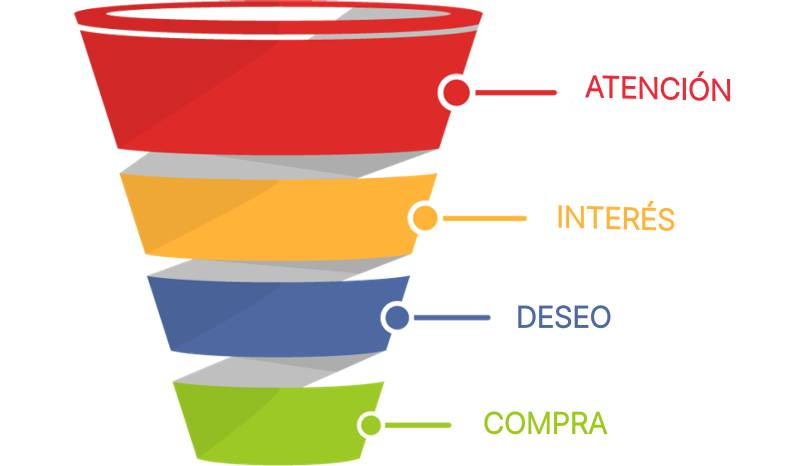

Qué es un embudo de ventas y cómo usarlo en nuestro negocio

Hoy me gustaría hablar de uno de los instrumentos más útiles para cualquier emprendedor, además de algo imprescindible que debemos poner en marcha si queremos conseguir clientes. Un embudo de ventas.
Personalmente, es lo que mejor resultado me ha proporcionado en absolutamente todas las iniciativas que he emprendido, incluyendo, por supuesto, Recursos para Pymes.
Así que veamos a fondo el tema, porque como siempre, tiende a complicarse innecesariamente con acrónimos inútiles en inglés, especialmente por aquellos «expertos» en marketing que quieren que les contrates a ellos o revender con otro nombre lo mismo de siempre. Y es que, en marketing, en realidad, no hay nada nuevo bajo el sol.
Qué es un embudo de conversión o venta
Un embudo de conversión es un proceso gradual que sirve para convertir a un visitante o interesado en un cliente de pago.
Dicho camino suele comenzar por concienciarse de posibles soluciones, luego pasa al interés por algunas de ellas, seguido del deseo por las que mejor le encajan y, por último, la compra cuando una de ellas le ha convencido lo suficiente.
Por qué funciona un embudo de venta
Por varias razones, siendo la principal que emula el proceso natural de compra y trata de optimizarlo en cada una de las etapas que la compone.
Hoy día, es muy difícil obtener una venta a la primera, a menos que tengamos una tienda de productos muy básicos, baratos y poco diferenciados. Y cada minuto que pasa, esas ventas a la primera son aún más escasas.
El cliente tiene más información y opciones que nunca, y las usa. Del mismo modo, también es menos inocente y más cínico. Y es normal. Ya ha tenido demasiadas experiencias negativas y sabe que el poder ha cambiado y está de su lado.
Es por eso que no comprará cualquier cosa, ni a nadie en quien no confíe, que no le haya demostrado resultados y tampoco nada que no haya podido probar. Igualmente, no hará negocios con empresas que no le parecen fiables.
El embudo de venta trata de proporcionarle, a lo largo de su viaje desde el interés hasta la compra, todas esas cosas: demostración, confianza, resultados…
Cuáles son las partes o fases básicas de un embudo de venta
En un mundo ideal, cada producto de cada negocio tendría un embudo de venta personalizado y optimizado. Sin embargo, esto es el mundo real. Además, podemos generalizar un poco, ya que, independientemente del negocio o producto, una venta siempre sigue unos pasos generales comunes.
Por ejemplo, a la hora de comprar cualquier cosa, el proceso natural empieza por informarnos un poco, hoy día, casi siempre buscando en Internet. De ahí, la importancia de una presencia online, porque de no tenerla, seremos invisibles en las primeras etapas y la enorme mayoría de intenciones de venta morirán en nuestro caso nada más empezar.